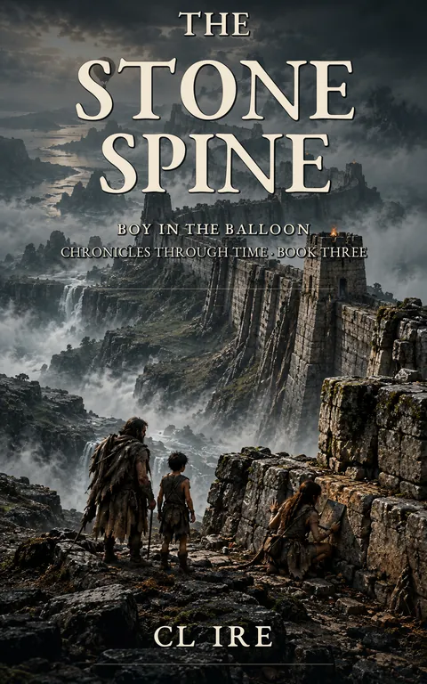

The Stone Spine
The Boy in the Balloon: Chronicles Through Time, Book 3
The Wall is too long to belong to one story. And too old to belong to any empire that claims it.
Kindle Unlimited reader? Membership eligibility for individual books is shown on Amazon. The format links above are paid affiliate links.
Purchase links open Amazon. Format availability is taken from the public catalog record.
What is on file
The Wall is too long to belong to one story.
And too old to belong to any empire that claims it.
Across mountains, valleys, and centuries of forgotten history, an immense stone structure stretches farther than the eye can follow.
Emperors claim to have built it. Soldiers defend it. Archivists preserve its records. Generations have been taught that the Wall exists to protect civilization from whatever waits beyond it.
Everyone knows what the Wall is.
Read the complete filed description
Until three travelers arrive from the sky.
The boy, the Builder, and Vale have spent their journey learning that the world's greatest mysteries often conceal something far more extraordinary than magic.
A mechanism.
A method.
A purpose someone stopped remembering.
And the Wall is full of contradictions.
Its towers face the wrong directions. Its foundations belong to eras that official histories refuse to acknowledge. Its repairs follow patterns older than the empires that claim credit for them.
The boy reads the structure through pressure and geometry.
Vale reads its rebuilding phases like handwriting, finding generations of alterations hidden beneath newer stone.
And the Builder recognizes something in its ancient design that even he cannot fully remember.
But the deeper they investigate, the more troubling the evidence becomes.
Because the Wall's keepers are not entirely ignorant of its contradictions.
Some have preserved them.
Some have concealed them.
And some have spent generations rewriting the record until maintaining the Wall and protecting its official history have become dangerously different things.
What happens when a civilization becomes so determined to preserve its story that it begins destroying the machinery beneath it?
The three travelers must decide how much truth to uncover, whom to trust with it, and whether revealing a forgotten purpose might endanger the very people the Wall was built to protect.
Because some secrets survive through silence.
Others survive through repetition.
And the most dangerous ones survive because everyone has agreed to call them something else.
The Stone Spine is Book Three of Boy in the Balloon: Chronicles Through Time, a mythic speculative-fiction journey through ancient engineering, contested histories, forgotten civilizations, and the extraordinary things humanity inherits without understanding.
Some structures divide nations.
Some measure them.
And some remember what history was ordered to forget.
Further material may surface.
No connected records are currently listed for this entry. Connections are added only when the archive can support them, and not merely because two stories share a city.
Request filing notices ↗